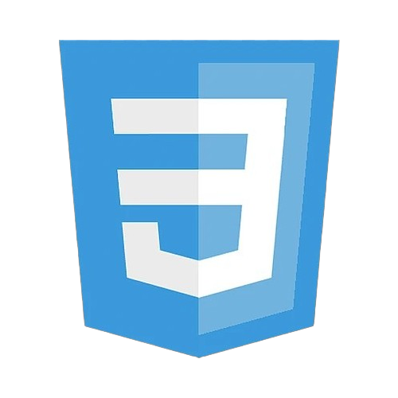

Camping Festivals Website Guide
My Camping Festivals Guide is a web project that celebrates the rave and music festival community. It serves as an entry-level guide for newcomers and a resource hub for returning festival-goers. From preparation tips to favorite festivals, the site is designed to be informative, user-friendly, and visually engaging.
 View on GitHub
View on GitHub
Home Page
The homepage introduces visitors to the rave and music festival community. It discusses the core values of the scene—like PLUR (Peace, Love, Unity, and Respect)—and sets the tone for what new and returning festival-goers can expect from the guide. The layout is colorful and welcoming, aimed at building excitement and curiosity.
Preparing Page
This page provides a helpful checklist of what to bring when attending a camping music festival. From camping gear and hydration tools to rave essentials like LED accessories and sunscreen, the page is designed to help users feel confident and ready.
Top Festivals Page
The Top Festivals page highlights some of the most popular camping music festivals across the country. Each festival is described with details like its location, music style, vibe, and what makes it unique. This gives users a glimpse into which events might be the right fit for their taste and energy level.
Request Info Page
The Request Info page features a clean and simple contact form where users can submit their name, email, and message to request more information or ask questions. It’s an interactive touchpoint that encourages user engagement and helps visitors feel supported.
Technologies Used
 HTML
HTML- CSS
 VS Code
VS Code